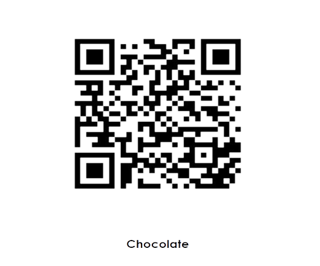

Nós cultivamos o crescimento de pessoas e tecnologia!
Utilize a tecnologia para simplificar a experiência que você precisa. Agregue valor para o seu produto, AltF4 te ajuda!
Visão 360° + "Totum Approach"
Sistema Integrado
Nossos clientes são ouvidos, e a satisfação deles é o objetivo principal. Desde os planos de estudos personalizados por eles, até feedbacks constantes de melhorias da plataforma, assim completando a nossa abordagem 360°. Nós garantimos o fornecimento de conteúdo online e offline pelas plataformas do site e aplicativo gerando rastreabilidade em todo o processo de aprendizado.
Projeto Sustentável que valoriza cada etapa de desenvolvimento para produzir um conteúdo de qualidade na prática. Transparência na informação com nossos clientes para otimizar o processo e causar um impacto positivo nas pessoas e no ambiente escolar.
Block Chain
O que é ?
Block Chain é um sistema de armazenamento de dados virtual. Não há autoridade que o controle - tornando-o descentralizado. A alteração das informações é virtualmente impossível, dando a ela muitos usos, como bancos ou autenticação de cadeias de suprimentos. Uma série de cadeias de blocos é chamado de livro-razão compartilhado e imutável que facilita o processo de registro de transações e o rastreamento de ativos em uma rede empresarial. Um ativo pode ser tangível (uma casa, um carro, dinheiro, terras) ou intangível (propriedade intelectual, patentes, direitos autorais e criação de marcas). Praticamente qualquer item de valor pode ser rastreado e negociado em uma rede de blockchain, o que reduz os riscos e os custos para todos os envolvidos.
Como funciona ?
As informações são adicionadas ao primeiro bloco da cadeia - este bloco é criptografado com um algoritmo complexo para impedir que seja ajustado ao contador. Cada vez que uma nova informação é adicionada, um novo bloco é criado, este bloco é então vinculado ao bloco anterior (criando assim uma cadeia de blocos). As empresas dependem de informações. Quanto mais precisas e rápidas de receber elas forem, melhor. A blockchain é ideal para entregar essas informações, pois ela fornece informações imediatas, compartilhadas e completamente transparentes armazenadas em um livro-razão imutável que pode ser acessado apenas por membros da rede autorizada. Uma rede blockchain pode acompanhar pedidos, pagamentos, contas, produção e muito mais. Como os membros compartilham uma visualização única dos fatos, é possível ver todos os detalhes de uma transação de ponta a ponta, o que oferece maior confiança, eficiência e novas oportunidades.
A necessidade da transparência
Uma tendência em rápido desenvolvimento
A medida que as marcas procuram se tornar mais sustentáveis e atraentes para seus clientes, mais informações
são necessárias sobre os vegetais que usam para comercializar seus produtos. Localização exata, até o campo
exato, hora escolhida, quem escolheu como eles escolheram. Impacto ambiental da área de cultivo (ou seja, para
evitar o cenário do tipo óleo de palma).
Impacto social - garantir a ausência de trabalho infantil,
pagamento justo, educação para os habitantes locais, saúde. Assim como todos os critérios anteriores, existe o
ponto de “confiança”. Se uma empresa diz que o fornecimento de seu óleo de baobá vem de uma determinada área
da Tanzânia (para ser classificado como orgânico) - como pode provar que esta é uma informação precisa?
A
velha “folha de papel” é fácil de enganar e se houver uma cadeia de suprimentos complexa entre os agricultores
e a empresa, é difícil provar de onde veio o óleo de baobá. A digitalização e, em particular, o blockchain
oferece soluções para dar mais confiança à cadeia de abastecimento, e consecutivamente contribuir para uma
agricultura sustentável, conforme o segundo objetivo proposto pelas SDG (Sustainable Development Goals).
Pegue seu smartphone e digitalize com a câmera:
Alimentos com propósito!
O que?
- Ingredientes de alta qualidade, tecnologia natural, seguros e sustentáveis
- Gama de soluções para possíveis inconformidades da cadeia
- Abordagem 360°, principalmente focada em narrativa de campo e conceitos de biocomércio.
- Rastreabilidade total através do Blockchain
- Cadeias de abastecimento monitoradas pelas certificadoras ESS (Ethical Sourcing System)
Como?
- Abastecimento com respeito aos colaboradores envolvidos
- Transparência na cadeia de abastecimento desde o início
- As informações fortalecem a cadeia de abastecimento
- Causando impacto econômico, social positivo localmente
- Reforça a necessidade da importância dos pequenos produtores
Somos investidores em Tecnologia estratégica...
A AltF4 investe e desenvolve negócios de tecnologia e pessoas, para que alcancem o máximo de seu potencial. Temos um time apaixonado por desafios e que sonha grande, com o objetivo de impactar a vida de todas as pessoas.
Somos especialistas em tecnologia, gestão, cultura e inovação. Trabalhamos diariamente para apoiar e impactar as empresas do nosso ecossistema e principalmente as pessoas e profissionais que fazem parte de cada trabalho.
Saiba maisTechVision
Sensor NDVI
NDVI serve para analisar a condição da vegetação natural ou agrícola nas imagens geradas por sensores remotos. É frequentemente usado para medir a intensidade de atividade clorofiliana, inclusive comparando vários períodos distintos. O NDVI é computado realizando aritmética de canais espectrais dos sensores, na maioria dos casos provenientes de satélites. (mudar texto)
Ideia
Por meio da utilização de drones e seus sensores NDVI (Índice de Vegetação por Diferença Normalizada) serão monitoradas as plantações e estimada a produtividade com o intuito de possibilitar o controle automático dos tratores nas áreas delimitadas já calculadas, assim realizando uma colheita automática com maior eficiência.
O funcionamento da TechVision se dará da seguinte maneira: Drones com seus sensores NDVI receberão ordens de um sistema central, mapeando e demarcando uma área, para que segundo os dados obtidos tratores controlados automaticamente, com o auxílio de sensores, possam se movimentar e realizar a colheita.
Dessa forma conseguimos aumentar a produtividade agrícola, enquanto reduzimos o uso de produtos químicos e o desperdício de alimento. Já que as análises obtidas não só comandarão os tratores, mas serão capazes de indicar a presença de pragas, assim como decidir o melhor momento para realizar cada tarefa, o que consequentemente reduz os casos de colheita precoce.
Descubra tudo o que podemos oferecer para sua empresa
Preencha seus dados e entraremos em contato para conversarmos mais sobre o desenvolvimento de projetos para a sua empresa, sem compromisso.